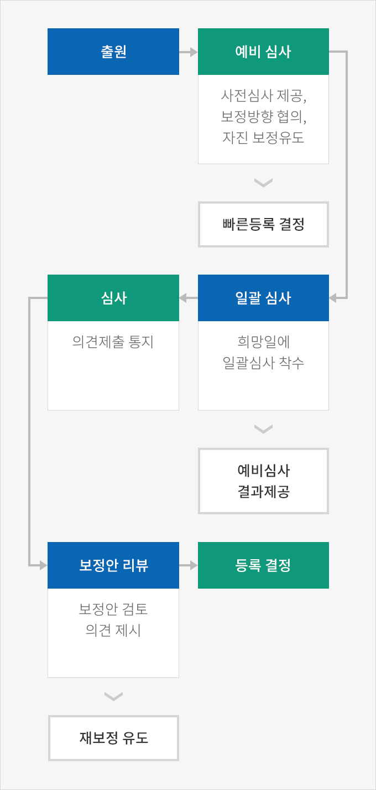
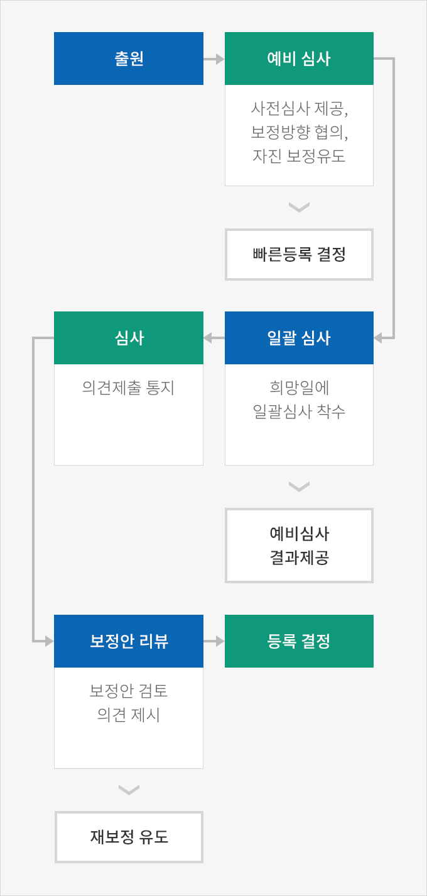

특허청 주요 서비스
- Home
- 경영·생활
- 지식재산권
- 특허청 주요 서비스
4차 산업혁명 등으로 기술혁신과 지식재산 정책이 국가 전략의 핵심이 된 현재, 한국의 특허청은 신뢰받는 심사, 심판 서비스 제공, 강한 특허 창출지원과 보호강화, 우수지식재산의 사업화 촉진에 더해 관련 인력양성 및 대국민 서비스 개선 정책 등을 추진하고 있다.
맞춤형 3트랙 특허심사제도
특허청은 지식재산권의 심사처리기간 및 심사품질에 대한 경쟁력 있는 서비스를 제공하기 위해 우선심사, 일반심사, 늦은심사로 구성된 맞춤형 3트랙 특허심사제도를 운영하고 있다. 이를 통해 신속히 특허권을 획득해 독점적 지위를 선점할 수도 있고, 늦은심사를 통해 충분한 사업화 시간을 확보할 수도 있어 필요에 따라 심사기간을 조정할 수 있다는 장점이 있다.
- 우선심사 : 전문기관에 선행기술조사를 의뢰하고 우선심사 출원의 처리기간 조정
- 일반심사 : 평균 심사소요기간 이내에 심사결과를 제공
- 늦은심사 : 늦은 심사를 바라는 고객을 위해 심사유예 신청제도 도입
특허심사 3.0
기존의 일방향(One-Way) 서비스에서 탈피, 특허심사 전 과정에 걸쳐 출원인과 심사관이 소통하여 고품질 특허를 함께 만드는 새로운 심사 패러다임으로서 예비심사, 일괄심사, 보정안 리뷰의 단계가 있다.
심사단계별 주요제도
 

- 출원
- 예비심사 : 사전심사 제공, 보정방향 협의, 자진 보정유도 -> 빠른등록 결정
- 일괄심사 : 희망일에 일괄심사 착수 -> 예비심사 결과제공
- 심사 : 의견제출 통지
- 보정안 리뷰 : 보정안 검토 의견제시 -> 재보정 유도
- 등록결정